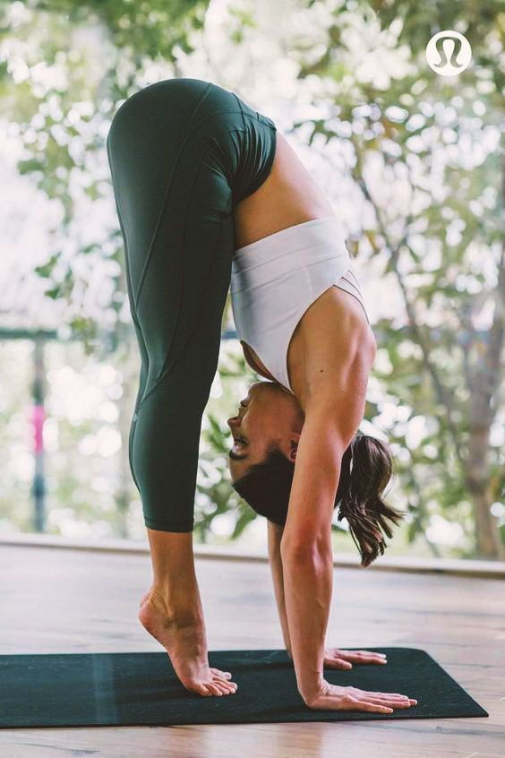

Mini rutina de cardio

Ejercicios
Realiza cada ejercicio entre 30 y 45 segundos con 15-30 segundos de descanso entre ellos. Repite 2-4 rondas según tu nivel.
- Jumping jacks: Ponte de pie, salta separando las piernas y levantando los brazos por encima de la cabeza. Repite de forma rítmica.
- Trote en el sitio: Trota en el lugar, levantando las rodillas para mayor intensidad.
- Sentadilla con salto: Realiza una sentadilla y al subir, salta explosivamente. Aterriza con control.
- Burpees: Combina sentadilla, plancha y salto. Mantén un ritmo cómodo si eres principiante.
- Escaladoras (mountain climbers): En plancha alta, lleva las rodillas hacia el pecho alternando rápidamente.
Consejo: controla la respiración y ajusta la intensidad según tu condición.